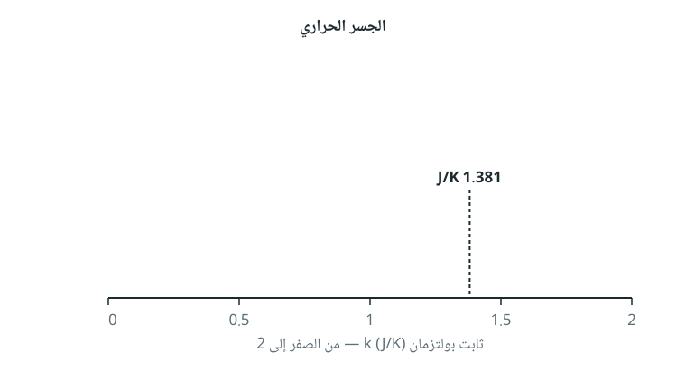

الجسر الحراري
Thermal bridge
الجسر الحراري مسار في غلاف المبنى موصليته أعلى من محيطه، فينقل الحرارة أسرع ويخفض المقاومة الحرارية الكلية. يظهر عند التقاء العناصر الإنشائية ويسبب تكاثفاً موضعياً.
الجسر الحراري هو جزء من غلاف المبنى مقاومته الحرارية أقل من مقاومة الأجزاء المجاورة، فيصير مساراً تفضيلياً لانتقال الحرارة. وينشأ عادة عند التقاء عناصر إنشائية مختلفة: عتبات النوافذ، وزوايا الجدران، ووصلات البلاطات بالجدران، والهياكل المعدنية المخترقة للعزل. وأثره مزدوج: يزيد الفقد الحراري الكلي في الشتاء والكسب في الصيف، ويخفض درجة حرارة السطح الداخلي عند الجسر، فإذا انخفضت تحت نقطة الندى تكاثف البخار عليه ونشأ العفن. ويُقاس أثره بمعامل الانتقال الخطي ψ بوحدة واط/(متر·كلفن) للجسور الطولية، وبمعامل نقطي χ بوحدة واط/كلفن للجسور الموضعية. مثال: جسر حراري خطي طوله 10 أمتار ومعامله 0.8 W/(m·K) يضيف انتقالاً 8 W/K عند فرق حراري 20 K، أي فقداً 160 واط.
كيف تعمل الظاهرة؟
الجسر الحراري ينشأ حين يوجد في مسار الحرارة عنصر موصليته أعلى من العزل المحيط به. فمثلاً بلاطة خرسانية مخترقة لجدار معزول تنقل الحرارة عبر العزل نفسه، لأن الخرسانة موصليتها نحو 1.7 W/(m·K) والبولسترين نحو 0.035. وفي الزوايا يقلّ عرض مسار الحرارة فيزيد التدفق النوعي. وأثر الجسر لا يقتصر على زيادة الفقد: يخفض درجة حرارة السطح الداخلي، فإذا انخفضت تحت نقطة الندى تكاثف البخار ونشأ العفن. ولهذا تُعالج الجسور بالعزل الخارجي المستمر وبفواصل حرارية عند الوصلات.
العلاقة بالأرقام
الفقد عبر جسر خطي = ψ·L·ΔT، وعبر جسر نقطي = χ·ΔT. وψ بوحدة W/(m·K) وχ بوحدة W/K. والمقاومة الكلية للغلاف تُحسب بمعاملات ψ وχ مضافة إلى U·A. مثال: ψ = 0.8 W/(m·K)، L = 10 m، ΔT = 20 K: الفقد = 0.8×10×20 = 160 W. ومقارنة بجدار U = 0.25 W/(m²·K)، المكافئ = 160/(0.25×20) = 32 m²، فالرقم يعتمد على U المرجعي ويجب التصريح به.
مفاهيم متقاربة
الجسر الحراري ليس تسرباً هوائياً: الأول توصيل في الصلب، والثاني حمل كتلة هواء. وليس نقص سماكة العزل: قد يوجد العزل كاملاً ويبقى الجسر. وψ ليس U: الأول لكل متر طولي، والثاني لكل متر مربع. وχ ليس ψ: الأول نقطي بوحدة W/K، والثاني خطي بوحدة W/(m·K). والجسر ليس عيباً في المادة بل نتيجة تصميم. والجسر لا يعني عفناً حتمياً: التهوية الكافية تمنع التكاثف.
حدود التطبيق
قيم ψ وχ تعتمد على التفاصيل الهندسية والأبعاد المرجعية، فلا تُنقل بين مشاريع بلا تحقق. وفي الحسابات المبسطة تُهمل الجسور أحياناً، وهذا يخفض دقة التقدير. ولا يُستعمل الجسر الحراري لتفسير كل تكاثف: قد يكون السبب تهوية سيئة أو رطوبة داخلية عالية. وفي المناخات الحارة يظهر الجسر ككسب حراري لا كفقد. ولا تُقارن معاملات جسور محسوبة بطرائق مختلفة بلا تصريح بالطريقة.

| الكمية | القيمة | المصدر |
|---|---|---|
| ثابت بولتزمان k | 1.380 649×10⁻²³ J/K | [1] |
| سرعة الضوء c | 299 792 458 m/s | [2] |
| ثابت ستيفان–بولتزمان σ | 5.670 374 419×10⁻⁸ W/(m²·K⁴) | [3] |
المصادر
- 1 The International System of Units (SI), 9th edition (2019) — BIPM — Bureau International des Poids et Mesures (2019). www.bipm.org/en/publications/si-brochure · اطُّلع عليه 2026-11-21
- 2 The International System of Units (SI), 9th edition (2019) — BIPM — Bureau International des Poids et Mesures (2019). www.bipm.org/en/publications/si-brochure · اطُّلع عليه 2026-11-21
- 3 CODATA Value: Stefan-Boltzmann constant — NIST — CODATA 2022 recommended values (2024). physics.nist.gov/cgi-bin/cuu/Value?sigma · اطُّلع عليه 2026-11-21
استشهد بهذا المصطلح
الصيغتان مبنيتان من بيانات الصفحة نفسها: العنوان والتاريخ ورابط النسخة المنشورة.
الجسر الحراري — Thermal bridge. (2026). ديوان المعرفة — انفراد. https://infiradev.com/diwan/terms/term-thermal-bridge.html
@misc{term-thermal-bridge2026,
title = {الجسر الحراري},
titleaddon = {Thermal bridge},
howpublished = {{ديوان المعرفة — انفراد} — مرجع علمي عربي},
year = {2026},
url = {https://infiradev.com/diwan/terms/term-thermal-bridge.html},
urldate = {2026-11-26},
note = {مراجعة علمية: hermes (مراجعة معتمدة 2026-11-26)}
}
راجعه: hermes (مراجعة معتمدة 2026-11-26) · 2026-11-26 · آخر تحديث 2026-11-21